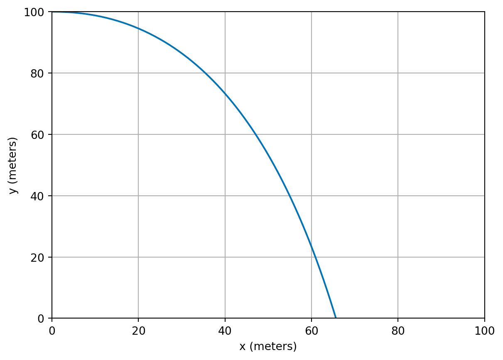
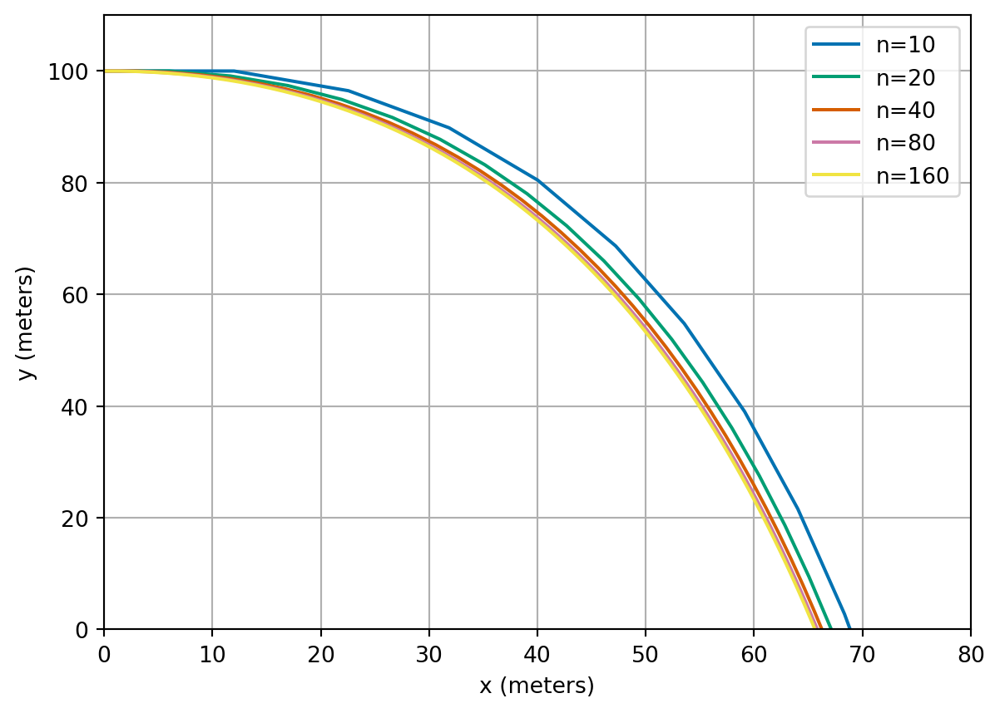

4 A model for the trajectory of an object
4.1 Newton’s laws of motion
A large component of many computer games is the physics engine. Planning robotic manoeuvring requires physics-based models too. Both applications typically spend large numbers of CPU cycles simulating the motion of bodies using Newton’s laws, based on the forces that are exerted upon them. In particular, Newton’s second law of motion says that the net force on an object equals its mass multiplied by its acceleration: \[ \text{Force} = \text{Mass} \times \text{Acceleration}. \] Once we know the acceleration of an object we can solve differential equations to calculate its subsequent velocity and position…
Consider an object being launched horiztonally from the top of a tall building. We know its initial position and speed in each direction and wish to predict its trajectory.
4.2 A mathematical model
In order to produce a model, we need to decide which are the most important forces acting on the object. One good choice would be to consider gravity and air resistance. Gravity only acts in the negative \(y\) direction (not the \(x\) direction), and always leads to a constant acceleration (\(g = 9.81\,\text{m}/\text{s}^2\)). Air resistance opposes the motion in both \(x\) and \(y\) directions, and we will assume that the force is proportional to the speed in each direction (similarly to our free fall example, Example 2.1). We will denote the constant of proportionality by \(k\).
We use the following notation:
- \(X(t)\) the horizontal distance of the object at time \(t\),
- \(Y(t)\) the vertical distance of the object at time \(t\) (height above ground, increasing upwards),
- \(U(t)\) the horizontal speed of the object at time \(t\),
- \(V(t)\) the vertical speed of the object at time \(t\).
The above model leads to the following two differential equations (assuming the mass of the object is \(1\,\text{kg}\)): \[\begin{align*} U'(t) &= - k U(t) \\ V'(t) &= - k V(t) - g. \end{align*}\] We also know that, from the definition of speed (rate of change of distance), that \[\begin{align*} X'(t) &= U(t) \\ Y'(t) &= V(t). \end{align*}\] In addition to these 4 differential equations for the unknown speeds (\(U\) and \(V\)) and distances (\(X\) and \(Y\)), we also need to know the initial conditions for the system. We choose one scenario: at \(t = 0\), \[\begin{align*} U(0) &= 20 \, \text{m}/\text{s} \\ V(0) &= 0 \, \text{m}/\text{s} \\ X(0) &= 0 \, \text{m} \\ Y(0) &= 100 \, \text{m}. \end{align*}\]
From now on we will omit the units in our calculations and assume they are implicit.
4.3 Python implementation
We can implement our model using Euler’s method:
def projectile(n, T):
"""
Simulate the 2D motion of a projectile using Euler's method.
The model evolves position (X, Y) and velocity (U, V) from given initial
conditions, under gravity and linear air resistance:
U' = -k U
V' = -k V - g
X' = U
Y' = V
Parameters
----------
n : int
Number of Euler time-steps.
T : float
Final time of the simulation. The step size is `h = T / n`.
Returns
-------
t : ndarray of shape (n+1,)
Time points of the simulation.
X : ndarray of shape (n+1,)
Horizontal position of the projectile at each time step.
Y : ndarray of shape (n+1,)
Vertical position of the projectile at each time step.
U : ndarray of shape (n+1,)
Horizontal velocity at each time step.
V : ndarray of shape (n+1,)
Vertical velocity at each time step.
"""
# initialise all arrays
t = np.empty(n + 1)
U = np.empty(n + 1)
V = np.empty(n + 1)
X = np.empty(n + 1)
Y = np.empty(n + 1)
# set initial conditions
t[0] = 0.0
U[0] = 20.0
V[0] = 0.0
X[0] = 0.0
Y[0] = 100.0
# define constants
k = 0.2
g = 9.81
# calculate step size
h = (T - 0) / n
# perform euler steps
for i in range(n):
U[i + 1] = U[i] + h * (-k * U[i])
V[i + 1] = V[i] + h * (-k * V[i] - g)
X[i + 1] = X[i] + h * U[i]
Y[i + 1] = Y[i] + h * V[i]
t[i + 1] = t[i] + h
return t, X, Y, U, V
4.4 System of equations
The above projectile example shows how to use Euler’s method to solve a system of four differential equations. In general, a system of four differential equations will take the form: \[\begin{align*} y_1'(t) & = f_1(t, y_1(t), y_2(t), y_3(t), y_4(t)) \\ y_2'(t) & = f_2(t, y_1(t), y_2(t), y_3(t), y_4(t)) \\ y_3'(t) & = f_3(t, y_1(t), y_2(t), y_3(t), y_4(t)) \\ y_4'(t) & = f_4(t, y_1(t), y_2(t), y_3(t), y_4(t)). \end{align*}\]
Exercise 4.1 How does this general form relate to the projectile example?
It is possible to apply Euler’s method or the midpoint method to a general system such as that. These examples may look quite complicated at first, but they are simply applying the same techniques to systems of differential equations rather than a single differential equation.
Example 4.1 Consider the following system of differential equations: \[ \vec{y}'(t) = A \vec{y} \quad \text{subject to the initial condition} \quad \vec{y}(0) = \begin{pmatrix} 0 \\ 1 \end{pmatrix}, \] where \(\vec{y}(t) = (y_1(t), y_2(t))^T\) and \(A = \begin{pmatrix} -1 & 1 \\ 1 & -2 \end{pmatrix}\). Approximate the solution at time \(T=1\) using 2 steps of Euler’s method with \(h = 0.5\).
Step 1: \[\begin{align*} \vec{y}^{(1)} &= \vec{y}^{(0)} + h A \vec{y}^{(0)} \\ &= \left(\begin{matrix}0\\1\end{matrix}\right) + \frac{1}{2}\times \left(\begin{matrix}-1 & 1\\1 & -2\end{matrix}\right) \left(\begin{matrix}0\\1\end{matrix}\right) \\ &= \left(\begin{matrix}0\\1\end{matrix}\right) + \frac{1}{2}\times \left(\begin{matrix}1\\-2\end{matrix}\right) \\ &= \left(\begin{matrix}\frac{1}{2}\\0\end{matrix}\right) \\ t^{(1)} &= t^{(0)} + h \\ &= 0 + 1/2 = 1/2. \end{align*}\]
Step 2: \[\begin{align*} \vec{y}^{(2)} &= \vec{y}^{(1)} + h A \vec{y}^{(1)} \\ &= \left(\begin{matrix}\frac{1}{2}\\0\end{matrix}\right) + \frac{1}{2}\times \left(\begin{matrix}-1 & 1\\1 & -2\end{matrix}\right) \left(\begin{matrix}\frac{1}{2}\\0\end{matrix}\right) \\ &= \left(\begin{matrix}\frac{1}{2}\\0\end{matrix}\right) + \frac{1}{2}\times \left(\begin{matrix}- \frac{1}{2}\\\frac{1}{2}\end{matrix}\right) \\ &= \left(\begin{matrix}\frac{1}{4}\\\frac{1}{4}\end{matrix}\right) \\ t^{(2)} &= t^{(1)} + h \\ &= 1/2 + 1/2 = 1. \end{align*}\]
4.5 Summary
We have seen that Euler’s method can be applied to systems of differential equation. The same ideas as here can be used to apply the midpoint method to systems of differential equations. Systems of differential equations based on Newton’s laws are extremely common in many applications including computer games and robotics.
The methods that we have learnt during this week are a small submit of the many methods available. There are a whole zoo of methods which have specialist properties such as even higher order convergence or preserve physical properties better. You will meet some on the lab sheet this week.